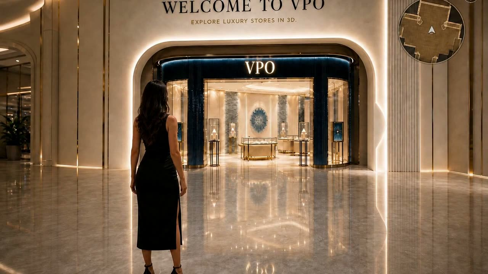
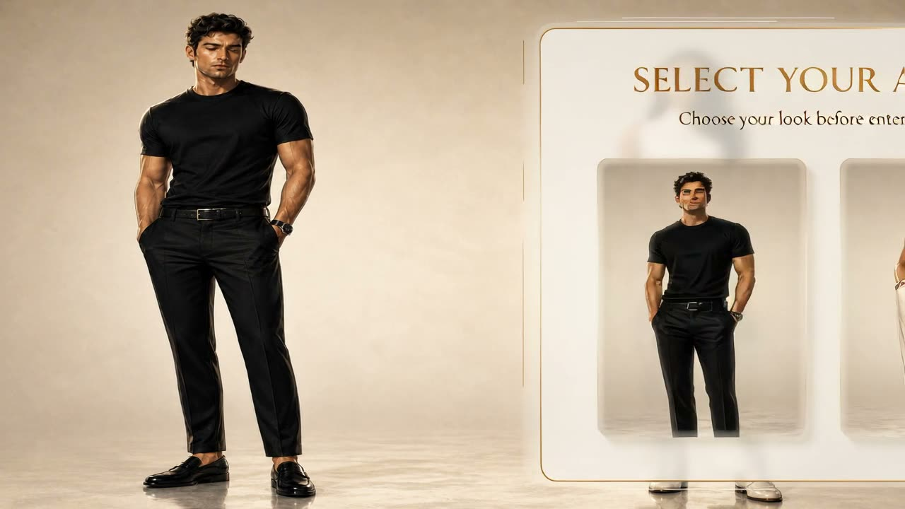
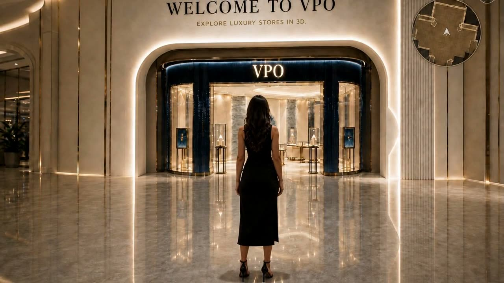
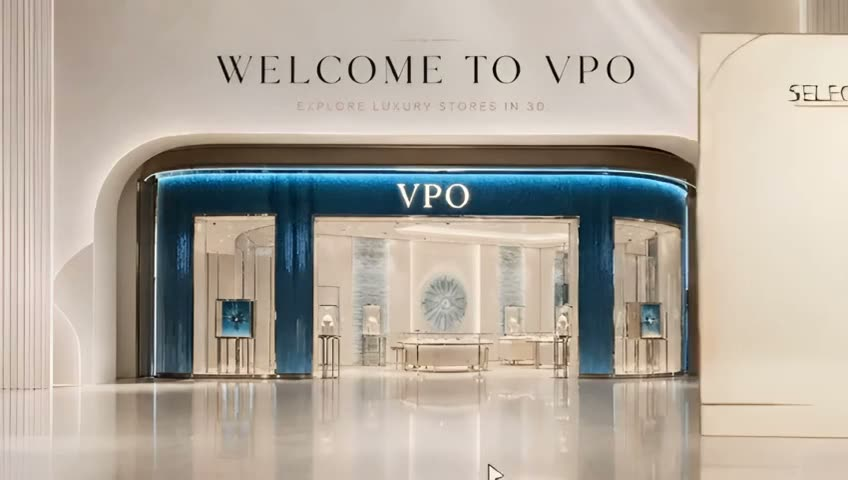
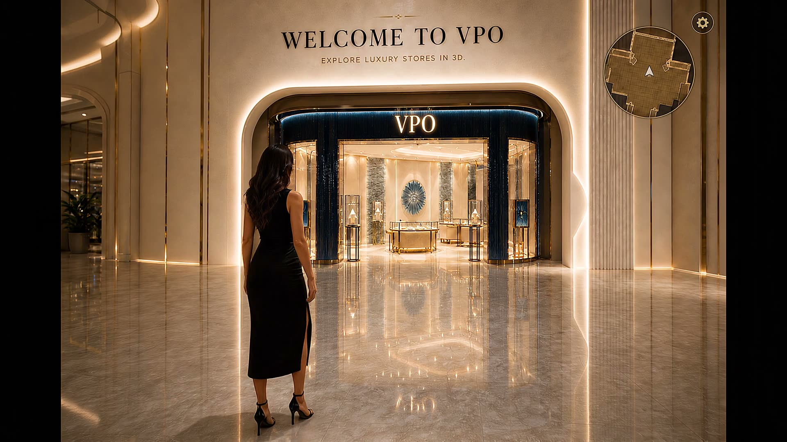
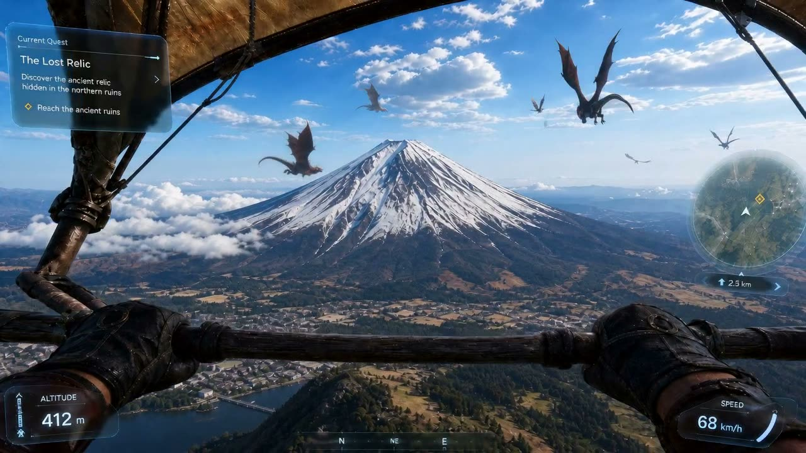
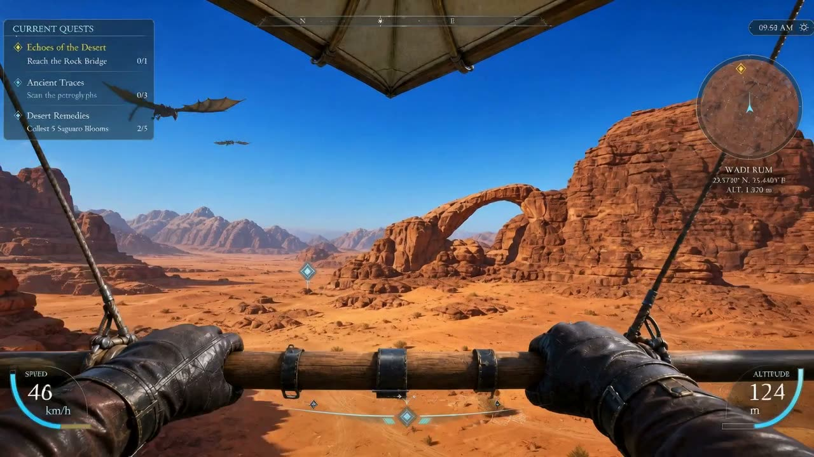
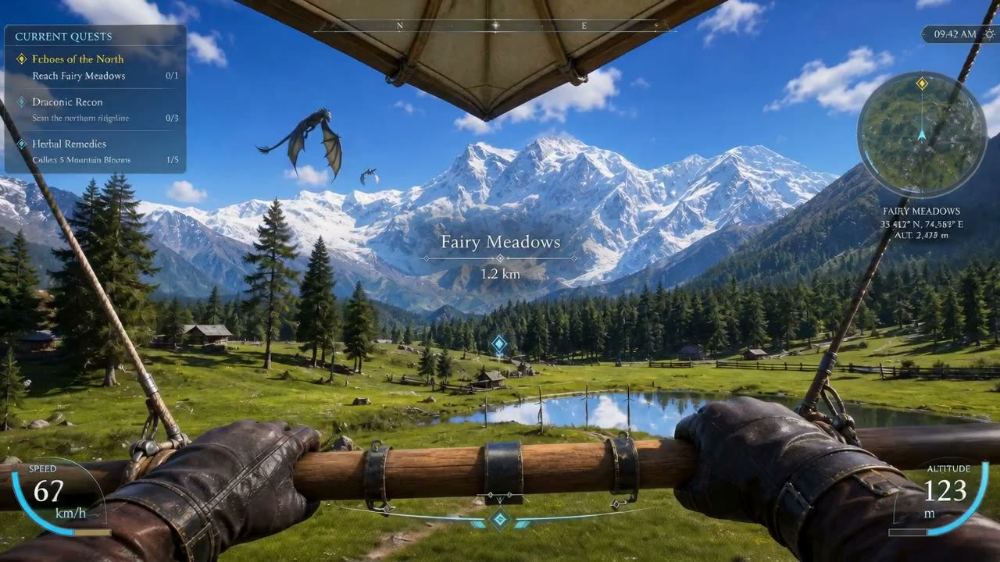

001 · Heritage at risk · Lahore
Discoverthe placeswe’re tryingto keep.
Scroll to open the door. Walk through into a community-built archive of heritage sites, classrooms, streets, and family rooms—captured with nothing but phones.
002 · Sacred architecture
A place a city still listens to.
Five minutes of phone video at a Mughal courtyard rebuilt as a walkable colonnade. School groups in another country can stand inside it without ever booking a flight.
003 · Living landscapes
Mountains that won’t stay still.
Glaciers retreat. Tree lines climb. We rebuild fragile alpine valleys so the version captured in 2026 stays explorable, named, and timestamped — a baseline for every reading after this one.
004 · Built by everyone
The next generation expects to walk in, not just look at it.
Phones are everywhere. People already carry footage of meaningful places. preservemy.world is the map that turns that footage into worlds.
Step into the extraordinary—hidden valleys, sacred courtyards, and ordinary rooms that deserve to outlive a screenshot. Each card below is a real capture type we preserve as a place you can walk inside.
Discover unique destinations
Beyond your imagination.
Drag to navigate
Walkable places you can actually enter.

Landscape
Wadi Rum — the red desert we can’t lose
Read more
Build 018

Heritage
Courtyard arches — geometry that holds a city
Read more
Build 021

Education
A school corridor — a memory you can teach from
Read more
Build 033

Family
A room a parent retired in — walked again
Read more
Build 005
Latest articles

Guide
How to film a place with only a phone (and keep it honest)
Read more
6 min · Field

Note
A climate baseline you can walk through, not just chart
Read more
4 min · Mountain

Ethics
What “consent” looks like when the place is someone’s home
Read more
5 min · Family

Case
Schools using walkable memory as a living syllabus
Read more
7 min · Education
Voyages of discovery
Exploration becomes protection when the record is walkable.
01 · Capture
Two to six minutes of steady footage. One place. One intent.
02 · Rebuild
Spatial AI turns it into a world you can enter, measure, and share.
03 · Teach
Students and researchers learn inside the place, not around it.
04 · Preserve
A timestamped baseline that outlives a screenshot and resists forgetting.
Travel sites sell the dream of discovery. We keep the evidence of what was here — and who it mattered to. If a place is at risk, a volunteer with a phone can become a field correspondent in minutes.
Next level
Travel experiencesthat feel like anentrance, not abookmark.
Travel
experiences
that
feel
like
an
entrance
,
not
a
bookmark.
The Travel Next Level sections you like work because the copy is minimal and the motion is paced. We keep that same rhythm, but point it at preservation: evidence-first, nonprofit, and direct.
Let’s make walkable memory.
We turn ordinary phone footage into walkable 3D worlds.
Send us a video of a place worth remembering — a courtyard, a classroom, a grandparent’s living room. Our Spatial AI flow rebuilds it as a 3D world anyone can step inside, share, and protect.
The
world
is
changing
faster
than
we
can
document
it.
We
already
record
the
world
with
our
phones
—
we
just
keep
filing
it
away
as
screenshots
walkable
memory
.
Send
us
a
video
of
a
place
worth
remembering
and
we’ll
turn
it
into
a
world
you
can
step
inside.
Bold brand
Memory that moves — not just images that disappear.
A nonprofit archive shouldn’t feel luxury or loud. It should feel inevitable: calm typography, deliberate motion, and evidence-first storytelling.
See it in action
From a phone in your pocket, to a place you can step inside.
Four field captures, four very different places. Same Spatial AI flow: footage in, walkable world out, archived for whoever needs it next.
002 · Climate baseline · Nanga Parbat
The mountain that won’t stay still.
003 · Spaces of identity · Karachi
An entrance no longer open to the public.
004 · Personal memory · Karachi
A grandparent’s living room, walked again.
In good company
Built with the people who care about places.
From a single family commission to a multi-school field program, we bring the same care to every preserved world. We love working with teams who want to keep places honest.
UNESCO
Open Heritage
UN-Habitat
MIT Solve
NDU Karachi
Wisconsin Schools
Built on trust
Families · Schools · NGOs
From bold communities to everyday teams, we work with people, places, and stories that have a future to share.
We take the same cinematic care you like from Tom Carder Media—big type, quiet confidence, and purposeful rhythm— and aim it at preservation. No luxury tone. Just clarity.
In the field
Four disciplines. One goal: a record people can walk inside.
The Tom Carder feel you like isn’t “luxury” — it’s clarity and pace. Here we keep the same cinematic cadence, but with a nonprofit palette and a direct message.
Video
A slow, steady capture turns into a stable world. The pace is the point.
A simple process
From phone video to explorable world.
preservemy.world is built around a real Spatial AI flow: create a session, upload footage, track progress, and generate a 3D world anyone can step inside. Record. Upload. Process. Explore. Four phases, no equipment, no cost to the contributor.
Build 005 · Walkable
Capabilities
What we actually preserve.
Four kinds of footage. The same flow. A world you can walk through, share, and remember.
PHASE 01
Record
Capture or pull video of a place worth remembering — a room, monument, street, school, shrine, home, or cultural site.
Recording briefPHASE 02
Upload
Send the footage to preservemy.world. The upload starts a 3D preservation session in your name.
Submission flowPHASE 03
Process
Spatial AI tracks progress and turns the video into a photorealistic place you can explore, light it, label it, walk it.
Pipeline notesPHASE 04
Explore
The result becomes a walkable 3D world that can be viewed, shared, downloaded, and remembered for as long as the internet remembers anything.
Explore worldsStories worth sharing
The future deserves more than screenshots.
Field correspondents, families, and educators on what a walkable archive feels like once a place they love is inside it.
Working with the team felt like handing a memory back — not surrendering it. They asked what mattered about my grandfather’s living room, and they kept that part honest in the rebuild.
Our students walked Wadi Rum on a Tuesday in a Wisconsin classroom. Three of them asked, unprompted, whether places like this are protected. That question is the entire point.
For an NGO documenting at‑risk sites, this is the first preservation tool that doesn’t require equipment we can’t ship. A volunteer with a phone is now a field correspondent.
I sent five minutes of footage from my mother’s old school. They sent back a place I could walk through with her one last time. There aren’t enough words for that.
Preserve your world
Have a video of a place worth remembering?
A memory on your phone could become a world someone walks through years from now. Send us footage, nominate a place, become a student ambassador, or partner with the preservation map.
Submission windowOpen · 2026
Average return72 hours
Built worlds042 & counting